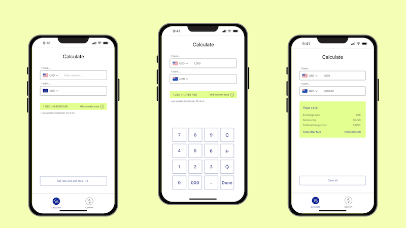

Currency exchange app

Project Overview
Led end-to-end discovery and design for a mobile currency exchange app. Conducted research, defined user flows, created wireframes and high-fidelity prototypes, and iterated based on usability feedback.
Problem
How might we help global travelers quickly understand and exchange currencies without cognitive overload, uncertainty, or hidden friction?
👉 80% of travelers I interviewed said they double-check exchange rates across multiple apps due to concerns about hidden fees.
Solution
Designed a focused MVP centered on transparency and real-world usability.
The app includes two core experiences:
Convert – For planning ahead
Displays the live mid-market rate with contextual education and refresh transparency. After entering currencies and amount, users see 4–5 ranked transfer options (lowest total cost first), including:
- Exchange rate
- Transfer fee
- Total cost
- Final amount received after fees
Calculate – For in-the-moment decisions
A simplified calculator for use abroad. Users enter the exchange rate and optional service fee to instantly see the true final total.
By separating research from real-time calculation, the design reduces cognitive load and makes hidden costs immediately visible.
Process
Followed a structured UX process: from research and synthesis to ideation, prototyping, and usability testing, with a focus on reducing financial complexity and increasing transparency.
👇 Click to jump to the corresponding section
Research Phase
User Research
I interviewed four global travelers about how they prepare for and manage money while traveling abroad. The goal was to understand real behaviors, decision points, and moments of uncertainty during currency exchange.
Examples of questions I asked:
- "How do you usually plan and prepare for managing money before a trip?"
- "Where do you typically exchange currency and how do you decide which place to use?"
- "What tools do you use to check exchange rates or fees?"
Across interviews, participants described comparing rates across multiple sources, worrying about hidden fees, and struggling to understand the true cost of exchange. These patterns informed the development of the core persona.

Visualized the user journey across four stages: search, open, use, and decide. While users felt analytical and focused, skepticism remained high. It highlighted opportunities to make fees visible, rank exchange methods by cost, and clearly explain the mid-market rate.

Empathy Map
Created an empathy map to capture what users say, think, feel, and do when navigating currency exchange. Patterns of uncertainty, mental math frustration, and fear of hidden fees directly informed the app’s focus on clarity and cost transparency.

User Flow
Mapped the core decision path from app entry to conversion completion. The flow addresses two critical questions: “Is my currency available?” and “Do I understand the mid-market rate?”

Design Phase
Sketches
Started with rapid hand-drawn sketches to map core screens and test information hierarchy. Early exploration allowed for fast iteration before committing to higher-fidelity designs.

Wireframes & Prototypes
Developed interactive wireframes in Figma for both core experiences: Convert and Calculate. The prototypes included currency selection, fee inputs, mid-market rate education, and ranked transfer options.
These wireframes went through multiple iterations and were used in moderated usability testing sessions. The screens shown reflect the latest refined versions.


Usability Study
I tested interactive wireframe prototypes with four participants across two rounds to validate core flows before moving to visual design.
Test tasks
- Convert $1,000 USD to NZD, locate the mid-market rate, and calculate bank transfer fees
- Use the kiosk calculator to manually enter a custom exchange rate and service fee
In the first round, participants paused at empty input fields, uncertain where to begin. Testing the revised design in round two confirmed that pre-selected defaults resolved this friction more effectively than progress indicators.
Key Finding
In the first round of testing, several participants paused when encountering the empty input fields. The interface required users to first select a currency before entering an amount, but this step was not obvious. Participants hesitated, unsure where to begin.
To address this, I introduced a labeled progress bar that highlighted the first step as Currency.
Iteration
A second round of testing showed that the progress bar did not meaningfully improve task completion. Participants still hesitated before interacting with the inputs.
Instead, the most effective solution was to introduce pre-selected defaults: default currencies and a starting amount. With an existing value visible, participants immediately understood what the fields represented and began editing them without hesitation.
This iteration reinforced an important usability principle: modifying an existing value is often easier for users than creating one from an empty state.

Results
Key Product Decisions
Decision 1: Prioritizing MVP Over Feature Expansion
During interviews, users requested expanded features such as safety ratings for exchange locations, translation support at kiosks, and nearby exchange maps.
While valuable, these ideas introduced significant scope complexity. Through synthesis, I identified the core unmet need: trust in exchange rates and final totals.
I intentionally narrowed the product to two essential experiences, Convert and Calculate, focusing on transparency and clarity first.
This MVP approach supports faster iteration, clearer positioning, and a stronger foundation for future expansion.
Decision 2: Replacing the Progress Bar with Stronger Defaults
Usability testing revealed that a progress bar did not meaningfully help users begin the conversion task. Most participants either missed the indicator or ignored it.
Instead, the final design introduced pre-selected currencies and a default amount, creating a visible starting state that users could immediately modify.
Testing revealed that users respond more confidently to editable defaults than to empty inputs. A visible starting state signals what action to take next more effectively than instructional text.
Product Successes
- Users clearly understood the distinction between mid-market rate and final amount after fees
- Default currency and amount inputs improved task completion confidence
- Ranking transfer methods by total cost reduced comparison friction
- Transparent fee breakdown increased trust and reduced cross-checking behavior
- The Calculate feature supported quick, in-the-moment decisions abroad
What I Learned
This project reinforced a simple lesson that clarity often comes from removing friction rather than adding features.
Testing early helped me simplify the inputs, strengthen the defaults, and focus the design on what matters most in financial decisions - trust.